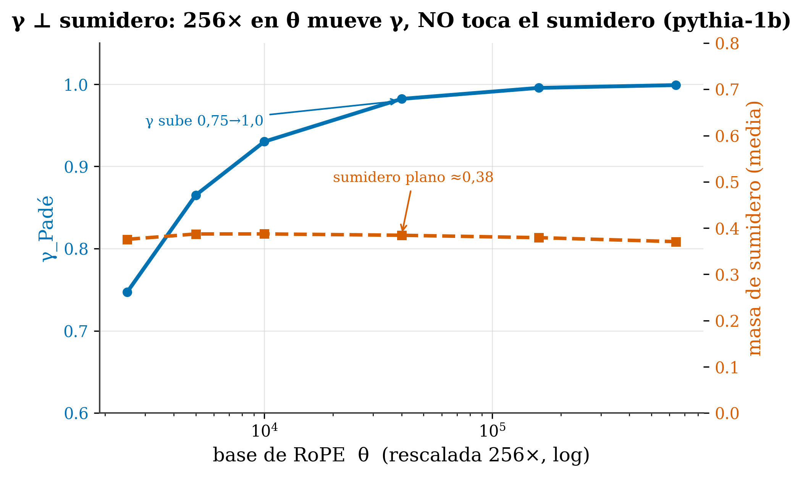

18 Attention sinks and concentration
Where we are. In Ch. 13 we met the sink (that bright column over the first token). Now we look at it in depth —why it forms— and present one of our clean results: concentration (the sink) and positional decay (γ) are two independent things, not the same one. It matters because the recent literature often conflates them, and separating them avoids mistaken conclusions.
18.1 The idea in one sentence
That a model concentrates a lot of attention on a few tokens (sink) and that its attention decays with distance (γ) are distinct mechanisms: you can move one without touching the other.
18.2 Key concepts and their role in the transformer
Before getting into detail, we define this chapter’s terms and what each one is for inside a transformer:
- Attention sink. Definition: the huge amount of attention that almost all tokens dump onto a few (typically the first), even though they carry no meaning. In the transformer: it’s the softmax “relief valve” —which forces each row to sum to 1—; without a place to dump the leftover weight, attention would destabilize.
- Massive activations. Definition: a few enormous hidden-state values, far above the rest. In the transformer: they’re the cause of the sink —they steer attention toward their token— and are tied to how the model compresses information.
- Sink mass. Definition: the fraction of attention accumulated on those few tokens, a number between 0 and 1. In the transformer: it measures how concentrated attention is; it’s a phenomenon of magnitude, not of position.
- Positional decay (γ). Definition: the exponent by which attention falls off with distance (
A(d)∝d^−γ). In the transformer: it predicts the model’s effective reach and the compressibility of its KV (Ch. 20); it’s a positional phenomenon. - RoPE base θ. Definition: the constant that sets the frequencies of the rotary position encoding. In the transformer: it’s the lever we rescale in the experiment; moving θ changes γ but, as we’ll see, doesn’t touch the sink.
- Within-model control. Definition: comparing the same model with itself by changing one single thing. In the transformer: it’s what lets us isolate the cause (θ) without the cross-factors of comparing different models.
- Independence (⊥). Definition: two mechanisms are independent if moving one doesn’t move the other. In the transformer: our central result —concentration and decay are two separate axes—.
With this clear, let’s get to why the sink forms and to the proof that γ and the sink aren’t the same thing.
18.3 What a sink is (and why it forms)
Recall (Ch. 13): the sink is the huge attention that almost all tokens dump onto the first token, even though it means nothing. The cause is structural: since softmax forces each row to sum to 1, a token that doesn’t need to look at anything in particular has to dump its weight somewhere —and models learn to “park” it on the first tokens—.
Recent research has sharpened this:
- It’s universal and forms during pre-training, it’s not a quirk of the BOS token (Gu et al. 2025): it arises from the optimization dynamics and the data.
- It’s caused by massive activations: a few enormous hidden-state values (Sun et al. 2024) that steer attention toward their token. And it’s been shown that sink and compression of representations are “two sides of the same coin” (Queipo-de-Llano et al. 2025).
In a sentence: the sink is a norm/magnitude phenomenon (how much attention piles up at one point), not a positional one (how it spreads with distance).
18.4 Our result: γ ⊥ sink
Here’s the contribution. (The symbol ⊥ means “independent”: moving one doesn’t move the other.) If concentration and decay were the same thing, moving one would move the other. We ran the clean experiment —the one that controls everything else—: take one and the same model (pythia-1b) and rescale only its RoPE base θ, by a factor of 256×, without touching anything else.

figures/make_fig17_orthogonality.py over data/gap1_ntk_rescale.csv.
The result is crisp: γ traverses almost its entire range (0.75 → 0.999) while the sink mass barely moves (0.371 → 0.387). Same lever; one mechanism changes enormously, the other not at all. Conclusion:
Positional decay (γ) and structural concentration (sink) are independent mechanisms. They’re not two names for the same thing, nor does one follow the other.
18.5 Why this matters (and why within-model)
Two reasons, and here it links with the honesty of Ch. 16:
- It adjudicates a confusion in the 2026 literature. Many works speak of “concentration” of attention as if it were the same as its decay with the distance. It’s not: our experiment separates them with data. When measuring or comparing attention, you have to treat them as two distinct axes.
- The clean control is within the same model. In Ch. 16 we warned that comparing raw γ across different models mixes factors. Here we avoid that problem: same model, same everything, only θ changes → any effect is caused by θ. That’s the difference between describing (atlas) and isolating a cause (controlled experiment).
18.6 The practical implication
When you analyze a model’s attention, don’t mix two questions:
- How concentrated is it? → the sink, the mass on a few tokens (a magnitude phenomenon; it’s managed, e.g., by keeping a few initial tokens as in StreamingLLM).
- How does it decay with distance? → γ (a positional phenomenon; it’s what predicts the reach and the compressibility of the KV, Ch. 20).
Confusing them leads to “fixing” one while believing you’re fixing the other.
Do secondary sinks appear or disappear when sweeping θ? It’s an open question that the literature itself flags (large-θ models sometimes lack them, and “the underlying cause remains an open question”, (On the Discrepancy of Secondary Attention Sinks in Large-Theta Models 2025)). We have the apparatus to study it; we flag it as pending work, not as resolved.
tafagent reports signals tied to concentration (e.g. peak_max_share and the η-regime, which detects when behavior is sink/SWA-like) in addition to γ. You’ll see on your model that they’re distinct axes: a model can have high γ and little sink, or the other way around.
18.7 Summary
- The sink is structural (softmax sums to 1) and of magnitude: caused by massive activations; universal, forms during pre-training (Gu et al. 2025; Sun et al. 2024).
- Clean result (ours): γ ⊥ sink-mass — rescaling θ by 256× within the same model moves γ (0.75→1.0) and leaves the sink flat (~0.38) → independent mechanisms.
- Why it matters: it separates a common confusion (concentration ≠ decay); and the within-model control isolates the cause (versus the cross-model confounds of Ch. 16).
- Open and honest: secondary sinks under θ-rescale are an unresolved question.
Next (Chapter 18): we’ve talked about “normal” (dense) attention. But there’s a whole taxonomy of attention mechanisms —sparse, local, linear, GQA/MQA, MoE—, each with its cost and its when. The comparative map nobody has.
18.8 Exercises
- Independence. If concentration and decay were the same phenomenon, what would have happened to the sink mass when γ rose from 0.75 to 1.0? What actually happened?
- The control. Why does rescaling θ within the same model isolate the cause better than comparing two different models?
- Two axes. Give an example of a practical decision that depends on the sink and another that depends on γ.
- Honesty. Which question about sinks do we explicitly leave unresolved?
The within-model θ-rescale experiment (γ ⊥ sink-mass) and its data are open: Predicting How Transformers Attend (Zenodo).